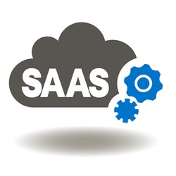

Le software as a service (SaaS) ou logiciel en tant que service, est un modèle d'exploitation commerciale des logiciels dans lequel ceux-ci sont installés sur des serveurs distants plutôt que sur la machine de l'utilisateur. Les clients ne paient pas de licence d'utilisation pour une version, mais utilisent librement le service en ligne ou, plus généralement, payent un abonnement.
Le logiciel en tant que service (SaaS) est donc la livraison conjointe de moyens, de services et de savoir-faire qui permettent aux entreprises d'externaliser intégralement un aspect de leur système d'information (messagerie, sécurité…) et de l'assimiler à un coût de fonctionnement plutôt qu'à un investissement.
Le terme SaaS (logiciel en tant que service) remplace les termes ASP (application service provider) ou encore « on demand », précédemment employés. Il est apparu le 28 février 2001, dans un article « Strategic Backgrounder: Software As A Service » publié par The Software & Information Industry's (SIIA) eBusiness Division, édition de Washington DC
La différence entre le logiciel en tant que service (SaaS) et les précédents modèles tels que ASP réside dans le fait que les applications s’appuyant sur ce modèle ont été nativement conçues pour l'accès via Internet. Précédemment, il s’agissait en général d’un frontal web appliqué à des applications traditionnelles
Les exemples de services collaboratifs les plus utilisés en mode SaaS (logiciel en tant que service) sont le partage d'agendas en ligne, les outils de conférence à distance, les services de gestion de contacts et de présence, la gestion documentaire et/ou de contenu ainsi que la messagerie d'entreprise. Ces solutions sont toujours en tête des usages des applications en SaaS
L'utilisation de solutions logicielles en tant que service (SaaS) en entreprise permet un meilleur contrôle des charges techniques. L'ensemble des solutions techniques étant délocalisées le coût devient fixe, généralement fonction du nombre de personnes utilisant la solution SaaS. Le prix par utilisateur englobe le coût des licences des logiciels, de la maintenance et de l'infrastructure. Il revient à l'entreprise utilisatrice de faire son choix entre utilisation en SaaS, d'une part, et acquisition des licences puis déploiement en interne, d'autre part.
Un autre avantage pourrait être de réduire la consommation électrique en permettant la mutualisation des ressources sur des serveurs partagés par plusieurs entreprises (architecture multi-tenant) ainsi que l'usage d'un ordinateur à faible consommation muni d'un simple navigateur Web sans autres licences associées.
La délocalisation des serveurs de la solution SaaS permet également un accès nomade aux données de l'entreprise. Cet accès entraîne un souci de sécurité de l'information lors du départ de collaborateurs. Il est indispensable d'avoir mis en place des procédures permettant, lors d'un départ, de supprimer l'habilitation de l'ancien collaborateur à accéder aux données de l'entreprise.
Le même service nécessite le fonctionnement de deux ordinateurs (client/prestataire) au lieu d'un seul. Cela peut augmenter la consommation électrique, notamment lorsque l'on utilise un poste client à forte consommation et un serveur non mutualisé.